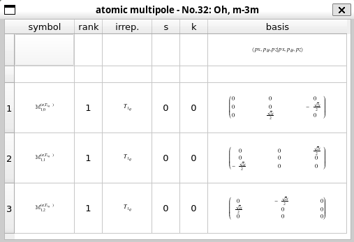

原子軌道の多極子#
空間反転あり#
例1：p軌道（点群\(O_h\)）#
まずはp軌道が持つ多極子自由度を例にとり、手順を説明する。 p軌道は\(\{x, y, z\}\)の対称性を持つ3つの軌道から成るので、多極子は全部で\(3^2=9\)個ある。
QtDrawから「MultiPie」を起動する。 表示されるウィンドウの上部のボタンを使う。

まずは点群を選ぶ。1「point group」、2「cubic」、3「Oh」の順に選択する
多極子を表示するには「atomic multipole」の行を使う。4から、スピンを考慮しない場合は「lm」（角運動量が整数）を、スピンを考慮する場合には「jm」（全角運動量が半整数）を選ぶ。今回は「lm」を選択する。
bra-ketの右の欄から軌道を選ぶ。今回はp軌道内の多極子自由度を知りたいので、5と6のどちらも「p」を選択する。
表示したい多極子の種類をQ, G, T, Mの中から選ぶ（それぞれ、電気、電気トロイダル、磁気トロイダル、磁気を意味する）。ここでは、まず7「Q」を選ぶ。
最後に8「atomic multipole」ボタンを押す。
新しいウィンドウに次の表が表示される。

電気多極子は\(A_{1g}\), \(E_{g}\), \(T_{2g}\)の3種類、6個あることがわかる。
次に、7を「M」に変更して磁気多極子を表示させる。

\(T_{1g}\)の3個の多極子があることがわかる。
これで9個全てそろったが、念のため、7を「G」や「T」にすると、次のような空の表が表示される。
以上の結果をまとめると、p軌道内の多極子の分類は次の式で表される。
\[
T_{1u} \otimes T_{1u} = A_{1g}^{+} \oplus E_{g}^{+} \oplus T_{1g}^{-} \oplus T_{2g}^{+}
\]
ここで、\(+\), \(-\)は時間反転対称性の偶・奇を表す。